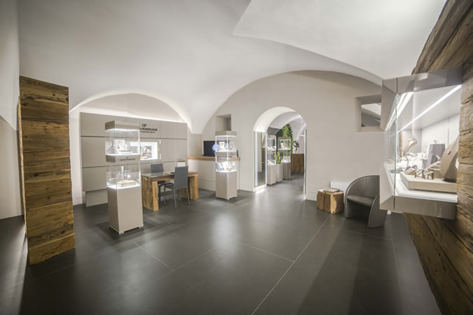

Trento
Via Oss Mazzurana 49, 38122 Trento
| Lunedì | 15-19 |
| Martedì | 9-12 e 15-19 |
| Mercoledì | 9-12 e 15-19 |
| Giovedì | 9-12 e 15-19 |
| Venerdì | 9-12 e 15-19 |
| Sabato | 9-12 e 15-19 |
| Domenica | chiuso |
- Telefono
- 0461 235105
Trento, Bolzano e Asiago. Qui trovi gli orari, il telefono e la strada per arrivare.
Via Oss Mazzurana 49, 38122 Trento
| Lunedì | 15-19 |
| Martedì | 9-12 e 15-19 |
| Mercoledì | 9-12 e 15-19 |
| Giovedì | 9-12 e 15-19 |
| Venerdì | 9-12 e 15-19 |
| Sabato | 9-12 e 15-19 |
| Domenica | chiuso |
Piazza Walther 19, 39100 Bolzano
| Lunedì | 9.30-12.30 e 15-19 |
| Martedì | 9.30-12.30 e 15-19 |
| Mercoledì | 9.30-12.30 e 15-19 |
| Giovedì | 9.30-12.30 e 15-19 |
| Venerdì | 9.30-12.30 e 15-19 |
| Sabato | 9.30-12.30 |
| Domenica | chiuso |
Corso IV Novembre 44, 36012 Asiago
Per gli orari di Asiago chiama il negozio: te li diciamo noi.

Per qualsiasi informazione scrivici o chiamaci: ti rispondiamo il prima possibile.